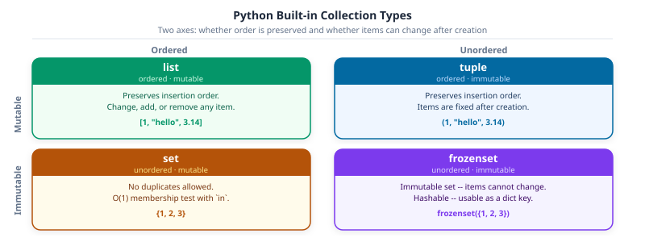

The energy theft system from Part 0 starts with data: 10,000 meter readings per customer, arriving as raw text from sensors that were never designed to agree on a format. Some readings are floating-point numbers. Some are stored as strings. A few are missing entirely.
Before any model trains on that data, someone writes Python to sort it out.
That is what this chapter is about. Not the model. Not the pipeline. The language itself: the vocabulary that turns raw information into something a computer can work with. Every ML system you will ever build starts here.
Python became the language of data science and machine learning because it is readable, practical, and because the entire ecosystem – NumPy, Pandas, scikit-learn, and MLflow all agreed to speak it. When a deployed model breaks, you read a Python traceback. When you inspect predictions, you write a Python list comprehension. Learning Python is not a detour before the interesting work. It is the work.
Chapter 1 covers the four things every Python program is built from: how to store a value and give it a type, how to work with text, and which collection to reach for when you have many values instead of one. Chapter 2 puts them in motion with loops and decisions.
Callout markers used throughout: - Key Concept: the one idea that unlocks the section - Activity: fill in the ... before moving on - Common Mistake: a bug pattern worth recognising on sight - Pro Tip: a practical shortcut worth remembering
NoteBefore You Begin
This file is a Jupyter notebook: a mix of formatted text and executable code cells.
Run a cell: press Shift + Enter: output appears directly below
Run everything from scratch: Kernel -> Restart & Run All
Run cells top to bottom: later cells use variables from earlier ones
If you prefer VS Code, the IDE Setup tutorial walks through the setup. You get IntelliSense, a Variable Inspector, and integrated git without leaving the editor.
NoteLearning objectives
By the end of Chapter 1 you will be able to:
#
Skill
Covered in
1
Annotate variables with type hints (list[float], str \| None)
Sec. 1
2
Apply PEP 8 naming conventions (snake_case, PascalCase, UPPER_SNAKE)
Sec. 1.4
3
Clean, parse, and format strings
Sec. 3
4
Choose the right collection for any task
Sec. 4
5
Use dict.get(), safe access patterns, and dict | merge
Sec. 7
Note on forward references: some cells use for loops before they are formally introduced. for loops are covered in Chapter 2 (02-control-flow.ipynb). Whenever you see for item in collection:, read it as ‘repeat this block once per item.’
1. Variables and types
What is a variable?
A variable is a named container that stores a value in your program’s memory. Think of it as a labelled box:
name ──► "Alice Kamau"
gpa ──► 3.85
enrolled ──► True
You create a variable with the assignment operator=:
name ="Alice Kamau"# create a box called 'name', put the value in it
⚠️ The = sign in Python means assign (store this value). It is NOT the mathematical equals sign. To check equality, use == (two equals signs).
Python’s four core types
Every value has a type: a label describing what kind of data it is:
Type
What it stores
Examples
Real-world use
int
Whole numbers
42, 2024001, -7
Student IDs, epoch counts, ranks
float
Decimal numbers
3.85, 0.001, 92.3
GPA, learning rate, accuracy
str
Text (any characters)
'Alice', "CS301"
Names, labels, file paths
bool
True or False only
True, False
“Is enrolled?”, “Did it converge?”
Python figures out the type of every value automatically. You never need to declare it.
Why add type hints?
Without hints, Python happily lets you store the wrong type in a variable:
gpa =3.85# float ✓gpa ="unknown"# str - legal but wrong! breaks any later calculation
Type hints are optional annotations that make your intent explicit so that tools can catch mistakes like the one above:
gpa: float=3.85# hint says this must be a float
The syntax is name: type = value. Hints are not enforced at runtime: Python won’t crash if you violate them, but the type checker ty will report an error the moment you try to assign the wrong type.
Python 3.9+:list[int], dict[str, float] (no imports needed) Python 3.10+:float | None means “a float, or nothing” (replaces Optional[float])
Key Concept: Type Hints
A type hint annotates what type a variable should hold: name: str = ‘Alice’. Hints are read by the type checker (ty) and your editor, not enforced at runtime. Annotate every variable, function parameter, and return value you write.
Key Concept: Type hints are for readers, not Python
Writing score: float = 87.5 doesn’t change how Python runs. Python never enforces type hints at runtime: x: int = ‘oops’ works fine. The value is in documentation and in tools like ty or mypy that catch mismatches before you even run the code.
Start with the simplest possible case: create a few variables and print them. No type hints yet, just the core idea of “give a name to a value”:
# Your first Python variables: no type hints yet# The = sign puts the value on the right into the name on the leftname ="Alice Kamau"# text value (str)score =87.5# decimal number (float)rank =1# whole number (int)enrolled =True# True or False (bool)# print() displays a value in the output area below this cellprint(name)print(score)print(rank)print(enrolled)
Alice Kamau
87.5
1
True
Python knows the type of every value. type() reveals it, and isinstance() tests whether a value belongs to a given type. Run this cell to confirm:
# type() tells you what Python has inferredprint(type(name)) # <class 'str'>print(type(score)) # <class 'float'>print(type(rank)) # <class 'int'>print(type(enrolled)) # <class 'bool'># Without hints, Python lets you overwrite with the wrong type: silentlyrank ="first"# rank was an int, now it's a str: Python allows itprint(f"rank is now a {type(rank).__name__}") # str!
<class 'str'>
<class 'float'>
<class 'int'>
<class 'bool'>
rank is now a str
That last reassignment (rank = 'first') would silently break any code that later tries to do arithmetic with rank. Type hints prevent this by making your intent explicit. Now see the same variables with proper annotations:
# --- Student enrollment record ---student_id: int=2024001full_name: str="Maria Garcia"gpa: float=3.85is_enrolled: bool=Truescholarship_amount: float|None=None# union type: float or None (Python 3.10+)print(f"Student : {full_name} (ID: {student_id})")print(f"GPA : {gpa} Enrolled: {is_enrolled}")print(f"Scholar.: {scholarship_amount}")
Run this to see Python’s runtime type information. isinstance() is preferred over type() because it handles class hierarchies. bool is a subclass of int, so isinstance(True, int) returns True:
# isinstance() is preferred over type() for checks: handles subclassesprint(f"type(gpa) -> {type(gpa)}")print(f"isinstance(gpa, float) -> {isinstance(gpa, float)}")print(f"isinstance(gpa, int | float) -> {isinstance(gpa, int|float)}")
Goal: Replace each … with the correct type from the table above (int, float, str, bool, or float | None).
How to decide: look at the value on the right of = and ask: “Is it a whole number? A decimal? Text? True/False? Could it be missing?”
Expected: after filling in the hints, your editor should show no type errors.
# TODO: replace each ... with the correct type annotationcourse_code: ... ="CS301"credits: ... =3pass_rate: ... =0.87instructor: ... ="Dr. Nkosi"lab_room: ... =None# lab not yet assignedis_core_course: ... =True# When you are done, print each variable with f'{var=}'print(f"{course_code=}")print(f"{credits=}")
PEP 8 (Python Enhancement Proposal 8) is the official Python style guide, written by Python’s creator Guido van Rossum. Every serious Python project follows it; the linter ruff enforces it automatically (ruff check .).
Python defines four naming styles. Each signals a specific role in the language:
snake_case
All lowercase, words joined by underscores. The default style for everything that isn’t a class or a constant: variables, functions, method names, and module file names.
Every word starts with a capital letter; no underscores. Reserved exclusively for class names, NamedTuples, and TypedDicts: anything that defines a new type.
All uppercase, words separated by underscores. Use only for module-level constants: values set once, never reassigned. The style signals to every reader: “don’t change this.”
A single underscore prefix signals that a name is private / internal: an implementation detail not meant to be called from outside the module or class. Python doesn’t enforce this; it’s a convention your team respects.
snake_case for variables & functions | PascalCase for classes & types | UPPER_SNAKE for constants | _leading for internals. The computer ignores these conventions. Your teammates will not. Run ruff check . to catch violations automatically.
Common Mistake: Mixing styles
StudentGPA = 3.85 looks like a class (PascalCase), not a variable. LOAD_DATA = lambda: … looks like a constant, not a function. Misleading names cause bugs that are hard to find. Be consistent.
Now that you know how Python stores a value and what type it has, operators let you compute with those values.
An operator is a symbol that performs a computation on one or two values. You already know arithmetic operators from mathematics. Python adds several more:
Category
Operators
Example
Arithmetic
+-*///%**
7 // 2 → 3
Comparison
==!=<><=>=
score >= 70 → True
Logical
andornot
a and b
Three families cover nearly every computation you’ll write: arithmetic, comparison, and logical.
# Weighted grade calculationmidterm: float=82.0final: float=91.0project: float=88.0weighted_grade = midterm *0.30+ final *0.50+ project *0.20print(f"Weighted grade: {weighted_grade:.1f}")# Augmented assignment modifies in placecredits: int=3credits +=1# add a make-up creditcredits *=2# doubled for summer sessionprint(f"Credits after adjustments: {credits}")
Weighted grade: 87.7
Credits after adjustments: 8
/ and // are different operators. This is one of the most common Python gotchas: // floors toward negative infinity, not toward zero:
Comparison operators return bool. Logical operators combine conditions and use short-circuit evaluation: the right side is not evaluated if the left side already determines the result:
# Comparison and logical operatorsscore: float=84.5attendance: int=90passes = score >=70qualifies = score >=80and attendance >=85# both must be trueat_risk = score <60or attendance <70# either triggersnot_pass =not passesprint(f"{passes=}{qualifies=}{at_risk=}{not_pass=}")
Short-circuit evaluation prevents errors like dividing by an empty list. Use is/is not to check object identity (same object in memory) and ==/!= to check value equality:
# Short-circuit evaluation: right side is NOT evaluated if left decides outcomescores: list[float] |None= [82.0, 91.5, 74.0]mean = scores andsum(scores) /len(scores) # safe: skips divide if scores is Noneprint(f"mean (safe): {mean}")# Identity (is) vs equality (==)a: list[int] = [1, 2, 3]b: list[int] = [1, 2, 3]c: list[int] = aprint(f"a == b : {a == b}") # True : same valuesprint(f"a is b : {a is b}") # False: different objectsprint(f"a is c : {a is c}") # True : same object
mean (safe): 82.5
a == b : True
a is b : False
a is c : True
3. Strings
Every field in your CSV starts as text: student name, course code, even numeric scores stored as strings. These methods let you clean, parse, and check those values before they silently corrupt your analysis.
A string is any piece of text: a student name, a course code, a log message, a file path. Create one by wrapping text in matching quotes:
name ='Alice Kamau'# single quotescourse ="Machine Learning"# double quotes - both work identically
Strings are used constantly in data science: reading CSV column headers, cleaning field values, building file paths, and formatting model output. Python provides dozens of built-in methods, no imports needed.
Key Concept: Strings are Immutable Sequences
A str is an ordered, immutable sequence of Unicode characters. Every string method returns a new string. The original is never changed. In data science you use strings to parse CSV rows, clean field values, build file paths, and format model output. Mastering the handful of methods below covers 95% of string work you will encounter.
Key Concept: f-strings with var= are a one-line debugger
print(f’{score=}‘) prints score=87.5: both the variable name and its value. Use this instead of print(’score:’, score). It’s the fastest way to inspect a pipeline mid-run without a debugger.
# f-strings: the standard way to format outputname: str="Alice Kamau"score: float=87.5rank: int=3print(f"Student : {name}")print(f"Score : {score:.1f}%") # one decimal placeprint(f"Score : {score:.0f}%") # rounded to integerprint(f"Rank : #{rank:02d}") # zero-padded two digitsprint(f"Pass? : {'Yes'if score >=70else'No'}")
Python 3.8+ added f’{var=}‘ which prints the variable name and its value in one shot. This is faster than writing print(f’var = {var}’) and far more useful during exploration.
Alignment specifiers ({name:<8}, {score:5.1f}) format values into fixed-width columns, handy for building readable reports:
# Alignment: useful for building readable reportsprint(f"{'Alice':<8}{92.1:5.1f}{'#'*9}")print(f"{'Bob':<8}{74.8:5.1f}{'#'*7}")print(f"{'Carol':<8}{88.5:5.1f}{'#'*8}")
Alice 92.1 #########
Bob 74.8 #######
Carol 88.5 ########
Pro Tip: Recognising Older Formatting Styles
You will encounter two older styles in legacy code and tutorials. Know them so you can read them, but write f-strings.
print(“Accuracy: %d%%” % 92) ← %-formatting (Python 2 era, still valid) print(“Accuracy: {}”.format(92)) ← .format() (Python 3.0+, more flexible than %) print(f”Accuracy: {acc}“) ← f-strings (Python 3.6+, fastest and most readable, use this)
Cleaning and parsing
Real-world data always arrives dirty: extra spaces, inconsistent delimiters, mixed case. strip() + split() is the most common two-step clean-up in any data pipeline:
# Cleaning and parsing: the most common string operations in data workraw_row: str=" Alice Kamau , 2024001 , 3.95 , Computer Science "# strip() removes leading and trailing whitespacecleaned: str= raw_row.strip()# split() on a delimiter returns a list; strip each part tooparts: list[str] = [p.strip() for p in cleaned.split(",")]name, sid, gpa_str, major = partsprint(f"Name : {name!r}")print(f"ID : {sid}")print(f"GPA : {float(gpa_str):.2f}")print(f"Major : {major}")
Name : 'Alice Kamau'
ID : 2024001
GPA : 3.95
Major : Computer Science
join() is the inverse of split(). It reassembles a list of strings into one string with a chosen separator. replace() and case methods normalise individual field values:
# join() is the inverse of split(): reassemble with a new delimitertsv_row: str="\t".join(parts)print(f"TSV : {tsv_row!r}")# replace(): swap delimiters or fix typosprint(cleaned.replace(",", " |"))# Case methodstag: str=" machine_learning "print(tag.strip().replace("_", " ").title())
Test membership, find positions, and count occurrences, all without writing a loop:
# Searching strings: common in log parsing and feature extractionlog: str="[ERROR] student_id=1042: score below passing threshold"print(f"starts with [ERROR] : {log.startswith('[ERROR]')}")print(f"ends with threshold : {log.endswith('threshold')}")print(f'contains "score" : {"score"in log}')print(f'find "student_id" : index {log.find("student_id")}')print(f'count of "e" : {log.count("e")}')
starts with [ERROR] : True
ends with threshold : True
contains "score" : True
find "student_id" : index 8
count of "e" : 4
String slicing (s[start:stop]) extracts a substring by position, using the same syntax as list slicing. rpartition(sep) splits at the last occurrence of sep, returning (before, sep, after), the cleanest way to separate a filename from its extension:
log: str="[ERROR] student_id=1042: score below threshold (score=58.5)"# Extract structured data from a log linestudent_part: str= log.split("student_id=")[1].split(":")[0]print(f"Student ID : {student_part}")# Slicing: same rules as listsprefix: str= log[:7] # '[ERROR]'body: str= log[9:]print(f"Prefix : {prefix!r}")print(f"Body : {body!r}")# rpartition(): split at the LAST occurrence of a separatorfilename: str="student_report_sem1.csv"stem, _, ext = filename.rpartition(".")print(f"stem={stem!r} ext={ext!r}")
Student ID : 1042
Prefix : '[ERROR]'
Body : 'tudent_id=1042: score below threshold (score=58.5)'
stem='student_report_sem1' ext='csv'
Activity 2 - Parse a student record
Goal: Extract the student ID, course, midterm, and final score from the raw log string below into typed variables.
raw: str=" [INFO] student_id=1042 | course=CS101 | midterm=72.5 | final=85.0 "# TODO: parse raw into the variables belowstudent_id: int= ...course: str= ...midterm: float= ...final_score: float= ...# Verifyif student_id isnot ...:print(f"{student_id=}{course=}{midterm=}{final_score=}")
4. Collections
A single variable holds one value. A collection holds many. The kind of collection you choose determines what you can do with that data: preserve its order, prevent duplicates, or look up values by a meaningful name in constant time.
Python has four built-in collection types. Before seeing each one in depth, here is the one-question rule for choosing between them:
You need to…
Reach for
Store an ordered sequence you will modify later
list
Store a fixed, ordered sequence that must not change
tuple
Look up values by a meaningful name in constant time
dict
Eliminate duplicates or test membership in constant time
set
That is the decision for nine out of ten situations. The four sections below cover each type in detail, starting with list: the one you will reach for most often.
Before diving into each collection, it helps to see them all at once. The four built-in types differ along two axes: whether they preserve insertion order and whether you can modify them after creation. Knowing where each type sits on this grid prevents the most common beginner mistakes.

The four Python built-in collection types mapped on two axes. Ordered+Mutable: list. Ordered+Immutable: tuple. Unordered+Mutable: set. Unordered+Immutable: frozenset.
5. Lists
A list is Python’s most versatile built-in container: an ordered, mutable sequence of items of any type.
When to use a list: - Order matters: items have a defined first and last position - You need to add, remove, or change elements after creation - You are collecting results in a loop: training losses, processed records, file paths
Key operations at a glance:
Operation
Syntax
Notes
Index
a[i]
0-based; negative counts from end
Slice
a[start:stop:step]
Returns new list; stop is exclusive
Append
a.append(x)
Add one item to the end
Extend
a.extend(iterable)
Add all items from another sequence
Insert
a.insert(i, x)
Insert before index i
Remove
a.remove(x)
Remove first occurrence of value x
Pop
a.pop(i)
Remove & return item at index i (default: last)
Delete
del a[i] / del a[i:j]
Remove item or slice, returns nothing
Clear
a.clear()
Remove all items (same as del a[:])
Membership
x in a
Returns True / False
Length
len(a)
Number of items
Sort
a.sort() / sorted(a)
In-place vs new list
Count
a.count(x)
Occurrences of x
Index
a.index(x)
Position of first x
Copy
a.copy()
Shallow independent copy
Key Concept: Ordered & Mutable
A list maintains insertion order and supports in-place modification. Annotate as list[int] (Python 3.9+, no import needed). Full reference: docs.python.org: 5.1 More on Lists
Common Mistake: Assignment Is Not a Copy
b = a makes b point to the same list. Mutating b also changes a. Use b = a.copy() or b = a[:] for an independent copy.
Key Concept: list is the default mutable sequence
list is ordered (insertion order preserved) and mutable (you can append, remove, sort). Reach for list whenever you need to collect and later modify a sequence of items. The other three types are more specific: use them when you need their constraints.
# Quiz scores for a cohort of studentsquiz_scores: list[float] = [78.0, 85.5, 92.0, 88.5, 95.0, 67.0, 81.0]# Indexing: 0-based; negative index counts from the endprint(f"First : {quiz_scores[0]}")print(f"Last : {quiz_scores[-1]}")print(f"[1:4] : {quiz_scores[1:4]}")print(f"[::2] : {quiz_scores[::2]}") # every other element# Aggregatesn: int=len(quiz_scores)mean: float=sum(quiz_scores) / nprint(f"n={n} min={min(quiz_scores)} max={max(quiz_scores)} mean={mean:.1f}")
A slice extracts a sub-list without modifying the original. The syntax is a[start : stop : step]:
Part
Default
Meaning
start
0
Index to begin from (inclusive)
stop
len(a)
Index to stop at (exclusive: this element is NOT included)
step
1
How many positions to advance each time
a = [10, 20, 30, 40, 50]a[1:4] # [20, 30, 40] - stop=4 is excludeda[:3] # [10, 20, 30] - start defaults to 0a[2:] # [30, 40, 50] - stop defaults to enda[::2] # [10, 30, 50] - every second elementa[::-1] # [50, 40, 30, 20, 10] - reverseda[:] # [10, 20, 30, 40, 50] - full copy (shallow)
Slicing never raises an IndexError. Out-of-range start/stop are clamped silently.
Python never raises an error for out-of-range slice indices. If stop exceeds the list length, Python uses the end of the list. If the entire range falls outside, you get an empty list: [1, 2, 3][0:10] returns [1, 2, 3]; [1, 2, 3][10:20] returns [].
= copies the reference, not the data. Both names then point to the same list in memory. Confirm the difference between a reference and an independent copy:
# Copy vs reference: a critical distinctionquiz_scores: list[float] = [78.0, 85.5, 92.0, 88.5, 95.0, 67.0, 81.0]backup: list[float] = quiz_scores.copy() # independent copyref: list[float] = quiz_scores # same object!quiz_scores[0] =99.0print("After quiz_scores[0] = 99.0:")print(f" quiz_scores[0] : {quiz_scores[0]}")print(f" ref[0] : {ref[0]}") # also changed: same objectprint(f" backup[0] : {backup[0]}") # unchanged: independent copy
Mutability means a value can be changed after it’s created. A list is mutable: you can add, remove, or replace any element at any time, without creating a new list. This is unlike strings and tuples, which are immutable: once created, their contents can’t change.
Type
Mutable?
What it means
list
Yes
Change any element, add or remove items freely: scores[0] = 99
str
No
Methods like .upper() return a new string; the original is untouched
tuple
No
Elements are fixed at creation and can’t be reassigned
Because lists are mutable, the methods below modify the original list in place and return None, not a new list.
scores: list[float] = [85.0, 92.0, 78.0, 65.0, 88.0]#: Adding items --scores.append(95.0) # add one item to the end [85, 92, 78, 65, 88, 95]scores.insert(1, 90.0) # insert 90.0 before index 1scores.extend([81.5, 76.0]) # add all items from another list#: Removing items --scores.remove(65.0) # remove first occurrence of 65.0 (raises ValueError if absent)last = scores.pop() # remove and return last itemsecond = scores.pop(1) # remove and return item at index 1del scores[0] # remove item at index 0 (no return value)# del scores[1:3] # delete a slice: removes multiple items at once#: Membership test --print(f"95.0 in scores : {95.0in scores}") # True / Falseprint(f"999.0 in scores : {999.0in scores}")print(f"scores : {scores}")print(f"popped : last={last}, second={second}")
A tuple is an ordered, immutable sequence, similar to a list, but its contents are fixed at creation. You can’t add, remove, or change any element.
Immutable means locked. Once you write coords = (1.29, 36.82), those two numbers can’t be replaced. This is intentional: immutability makes tuples safe to use as dictionary keys, pass between functions, and share across threads without risk of accidental modification.
When to use a tuple: - The number of elements is fixed by design (a coordinate pair is always 2 values) - Returning multiple values from a function (Python packs them into a tuple) - You need a hashable key for a dict or set (lists can’t be dict keys) - Signalling to a reader that this data must not change
Key operations at a glance:
Operation
Syntax
Notes
Index
t[i]
Same as list; negative index counts from end
Slice
t[start:stop:step]
Returns a new tuple
Unpack
a, b, c = t
Assign each element to a name
Extended unpack
first, *rest = t
*rest collects remaining into a list
Swap
a, b = b, a
Pythonic; no temporary variable needed
Length
len(t)
Number of elements
Membership
x in t
True / False
Count
t.count(x)
Number of occurrences of x
Find
t.index(x)
Index of first occurrence of x
Concatenate
t1 + t2
Returns a new, longer tuple
Key Concept: Ordered & Immutable
Use a tuple for data that must not change: coordinate pairs, database rows, function return values. Annotate the type of each position: tuple[str, int, float].
Key Concept: Use tuple to signal a fixed contract
A tuple communicates intent: ‘these items belong together and their positions have meaning.’ coords = (1.29, 36.82) is a promise that index 0 is always latitude. A list makes no such promise. When the positions are meaningful and the data should never change, use tuple.
# Tuple: annotate with the exact types of each positionrecord: tuple[str, int, float] = ("Alice Kamau", 2024001, 3.95)# Unpack all elements at oncename, student_id, gpa = recordprint(f"{name=}{student_id=}{gpa=}")# Extended unpacking with *first, *middle, last = (82.0, 91.5, 74.0, 88.0, 95.5)print(f"{first=}{middle=}{last=}")
Python’s swap idiom packs two values into a tuple and immediately unpacks them in the opposite order, no temporary variable needed. Tuples also enforce immutability at runtime:
# Pythonic variable swap: no temp variable neededx, y ="train", "val"x, y = y, xprint(f"After swap: {x=}{y=}")# Immutability: tuples cannot be changed after creationrecord: tuple[str, int, float] = ("Alice Kamau", 2024001, 3.95)try: record[0] ="Bob"# type: ignore[index]exceptTypeErroras exc:print(f"Immutable: {exc}")
After swap: x='val' y='train'
Immutable: 'tuple' object does not support item assignment
7. Dictionaries
A dictionary (dict) maps unique keys to values. Think of it as a lookup table: given a key, you get back its associated value in O(1) time: instantly, regardless of how many entries the dict contains.
Unlike a list (where you access items by numeric position), a dict lets you access data by a meaningful label:
student = {'name': 'Alice', 'gpa': 3.95, 'enrolled': True}student['gpa'] # 3.95 - by label, not by positionstudent.get('age') # None - safe access, no KeyError
When to use a dict: - Access by name: student record, model config, API response payload - Counting occurrences: {'cat': 3, 'dog': 1, 'bird': 2} - Grouping: {course_id: [student, student, ...]}
Python 3.7+ dicts preserve insertion order: you get keys back in the order you added them.
Key operations at a glance:
Operation
Syntax
Notes
Access
d[key]
Raises KeyError if key is missing
Safe access
d.get(key, default)
Returns default (or None) if key missing
Add / update
d[key] = value
Creates key if absent; overwrites if present
Bulk update
d.update(other)
Merge another dict or iterable of pairs
Remove
d.pop(key)
Remove and return value; KeyError if absent
Remove (safe)
d.pop(key, default)
Returns default instead of raising
Delete
del d[key]
Remove key in place; no return value
Clear
d.clear()
Remove all pairs; dict remains (now empty)
Membership
key in d
Checks keys only, O(1)
Keys
d.keys()
Live view of all keys
Values
d.values()
Live view of all values
Pairs
d.items()
Live view of (key, value) tuples, used in for loops
Length
len(d)
Number of key-value pairs
Merge (3.9+)
a \| b
New merged dict; right side wins on conflicts
Merge in-place
a \|= b
Update a with b in place
Copy
d.copy()
Shallow independent copy
Key Concept: Key-Value Map
A dict maps unique, hashable keys to values. Insertion order is preserved (Python 3.7+). Use dict[str, float] to annotate key and value types.
Key Concept: dict lookup is O(1): instant regardless of size
Looking up a key in a dict takes the same time whether the dict has 10 or 10,000,000 entries. Scanning a list for a value is O(n): it slows down as the list grows. When you need to look up items by name, always prefer dict over searching a list.
# Course record as a dictcourse: dict[str, object] = {"code": "CS301","title": "Machine Learning","credits": 3,"enrollment": 42,"pass_rate": 0.87,}# Access: [] raises KeyError on missing key; .get() returns a defaultprint(course["title"])print(course.get("lab_room", "TBA"))# Membership checks keysprint(f'"pass_rate" in course : {"pass_rate"in course}')print(f'"semester" in course : {"semester"in course}')
Machine Learning
TBA
"pass_rate" in course : True
"semester" in course : False
Modifying a Dict
Dicts are mutable: you can add, change, and remove keys after creation. .pop() removes a key and returns its value. .items() gives (key, value) pairs for iteration:
A set is an unordered collection of unique values. Duplicates are discarded automatically. You never need to deduplicate manually.
Two properties make sets special:
Uniqueness: every value appears at most once, always
O(1) membership testing: x in my_set takes the same time whether the set has 10 or 10,000,000 items. The equivalent x in my_list slows down linearly.
When to use a set: - Removing duplicates from a list: unique = set(my_list) - Fast membership check: if label in valid_labels: - Data pipeline integrity: find overlap or difference between train/val/test IDs
Key operations at a glance:
Operation
Syntax / Method
Notes
Create
{1, 2, 3} or set(iterable)
{} creates a dict, use set() for empty
Add
s.add(x)
No effect if x already present
Remove
s.remove(x)
Raises KeyError if x absent
Remove (safe)
s.discard(x)
No error if x absent
Pop
s.pop()
Remove and return an arbitrary element
Clear
s.clear()
Remove all elements
Membership
x in s
O(1), instant regardless of set size
Length
len(s)
Number of elements
Union
s \| t or s.union(t)
All elements from both sets
Intersection
s & t or s.intersection(t)
Elements present in both
Difference
s - t or s.difference(t)
In s but not in t
Symmetric diff
s ^ t or s.symmetric_difference(t)
In one but not both
Subset
s <= t or s.issubset(t)
Every element of s is in t
Superset
s >= t or s.issuperset(t)
Every element of t is in s
Disjoint
s.isdisjoint(t)
No elements in common
Immutable copy
frozenset(s)
Immutable set, can be used as a dict key
Key Concept: Unique Values & O(1) Lookup
A set never stores duplicates and tests membership in constant time. Annotate as set[str]. For an immutable, hashable set that can be used as a dict key, use frozenset.
Common Mistake: {} Is a Dict, Not a Set
empty = {} creates an empty dict. empty = set() creates an empty set. This trips up nearly every Python learner once. Now you know.
Key Concept: x in set_ is O(1); x in list_ is O(n)
‘alice’ in student_names scans every element if student_names is a list. Convert to a set first and the same check is instant. Any time you’re testing membership repeatedly, this is worth the conversion.
# Sets remove duplicates on creationraw_labels: list[str] = ["cat", "dog", "cat", "bird", "dog", "cat"]unique_labels: set[str] =set(raw_labels)print(f"raw : {raw_labels}")print(f"unique : {sorted(unique_labels)}")# O(1) membership test: much faster than list for large collectionsvalid_formats: set[str] = {"parquet", "csv", "json", "feather"}print(f"parquet valid : {'parquet'in valid_formats}")print(f"xlsx valid : {'xlsx'in valid_formats}")# Mutationvalid_formats.add("orc")valid_formats.discard("feather") # safe: no error if element is absentprint(f"formats : {sorted(valid_formats)}")
Confirm the {} gotcha by running this cell. The type output makes it unmistakable:
# GOTCHA: {} creates a dict, not a set: always use set() for an empty setempty_dict = {}empty_set =set()print(f"type({{}}) : {type(empty_dict)}")print(f"type(set()) : {type(empty_set)}")
Sets support mathematical operations directly with operators. These are invaluable for data-pipeline integrity checks such as detecting train/validation leakage:
# Set algebra: very common in data pipeline checkstrain_ids: set[int] = {101, 102, 103, 104, 105, 106, 107, 108}val_ids: set[int] = {107, 108, 109, 110}print(f"Union : {sorted(train_ids | val_ids)}")print(f"Intersection : {sorted(train_ids & val_ids)}")print(f"Difference : {sorted(train_ids - val_ids)}")print(f"Sym. diff : {sorted(train_ids ^ val_ids)}")# Practical: check for data leakage between splitsleakage: set[int] = train_ids & val_idsif leakage:print(f"\nWARNING: {len(leakage)} IDs in both train and val : data leakage! {leakage}")else:print("\nNo data leakage between splits.")
Union : [101, 102, 103, 104, 105, 106, 107, 108, 109, 110]
Intersection : [107, 108]
Difference : [101, 102, 103, 104, 105, 106]
Sym. diff : [101, 102, 103, 104, 105, 106, 109, 110]
WARNING: 2 IDs in both train and val : data leakage! {107, 108}
Activity 5 - Set Operations on Student Enrolment
Goal: Use set algebra to answer three questions about student attendance.
Find: 1. Students who attended both weeks (intersection). 2. Students who dropped out after week 1 (in week1 but not week2). 3. Total unique students across both weeks (union).
Expected: both={103, 104, 105}, dropped={101, 102}, total=7 unique students
9. Useful standard library tools
You’ve built lists, dicts, and sets by hand. Two tools from Python’s built-in collections module handle the most repetitive patterns so you don’t have to: counting occurrences and grouping items by a key.
Key Concept: Specialised Containers from collections
Three tools from the standard library cover the most common data-science patterns beyond the built-in types:
Counter: count occurrences; perfect for label frequencies and class imbalance checks
defaultdict: group items without writing if key not in d: d[key] = []
deque: O(1) append and pop from both ends; ideal for sliding windows in time series
Key Concept: Counter and defaultdict: right tool, not exotic tool
These two containers each replace a common workaround. Counter replaces dict + manual increment. defaultdict replaces dict + if key not in d checks. Reach for them whenever you find yourself writing boilerplate around a plain dict.
from collections import Counter# Class imbalance check using Counterpredicted_labels: list[str] = ["pass","pass","fail","pass","pass","fail","pass","pass","pass","fail","pass","pass",]counts: Counter[str] = Counter(predicted_labels)print(f"All counts : {counts}")print(f'"pass" : {counts["pass"]}')print(f"Unknown : {counts['unknown']}") # returns 0, not KeyErrorprint(f"Top 2 : {counts.most_common(2)}")
All counts : Counter({'pass': 9, 'fail': 3})
"pass" : 9
Unknown : 0
Top 2 : [('pass', 9), ('fail', 3)]
Build a class-distribution report and combine counters from multiple batches using Counter arithmetic: + merges counts, - subtracts (removing zeros):
# Class distribution reporttotal: int=sum(counts.values())for label, n in counts.most_common():print(f" {label:<8}: {n:2d}/{total} ({n / total:.1%})")# Counter arithmetic: combine counts from multiple batchesbatch_a: Counter[str] = Counter(["pass", "pass", "fail"])batch_b: Counter[str] = Counter(["fail", "fail", "pass"])combined = batch_a + batch_bprint(f"\nCombined batches: {combined}")
Goal: Use Counter to produce a class distribution report from the labels list below.
labels = ['A','B','A','C','B','A','A','B','C','A','B','A']
# Expected output
A : 6/12 (50.0%) [##############################]
B : 4/12 (33.3%) [#################### ]
C : 2/12 (16.7%) [########## ]
Hint: Build the bar with ‘#’ * int(pct * 30).
from collections import Counterlabels: list[str] = ["A", "B", "A", "C", "B", "A", "A", "B", "C", "A", "B", "A"]# TODO: print a class distribution reportcounts: Counter[str] = Counter(labels)total: int=sum(counts.values())for label, n in counts.most_common(): pct = n / total bar ="#"*round(pct *30) # default answer so cell executesprint(f"{label} : {n}/{total} ({pct:.1%}) [{bar:<30}]")
A : 6/12 (50.0%) [############### ]
B : 4/12 (33.3%) [########## ]
C : 2/12 (16.7%) [##### ]
defaultdict: Zero-Setup Grouping
defaultdict(factory) calls factory() to create a new default value whenever a missing key is accessed, eliminating the if key not in d: d[key] = [] boilerplate. defaultdict(list) is the standard pattern for grouping :
from collections import defaultdictstudents: list[dict[str, object]] = [ {"name": "Alice", "major": "CS", "gpa": 3.95}, {"name": "Bob", "major": "Math", "gpa": 3.45}, {"name": "Carol", "major": "CS", "gpa": 3.88}, {"name": "Dan", "major": "Math", "gpa": 3.72}, {"name": "Eve", "major": "CS", "gpa": 3.60},]# Group students by major: no 'if key not in d: d[key] = []' neededby_major: defaultdict[str, list[str]] = defaultdict(list)for s in students: by_major[str(s["major"])].append(str(s["name"]))print("Students by major:")for major, names insorted(by_major.items()):print(f" {major}: {names}")
Students by major:
CS: ['Alice', 'Carol', 'Eve']
Math: ['Bob', 'Dan']
The same pattern works for numeric accumulation. defaultdict(float) starts every new key at 0.0, making sum-per-group pipelines one-liners:
# Accumulate GPA sums per majorgpa_total: defaultdict[str, float] = defaultdict(float)gpa_count: defaultdict[str, int] = defaultdict(int)for s in students: key =str(s["major"]) gpa_total[key] +=float(s["gpa"]) # type: ignore[arg-type] gpa_count[key] +=1print("Average GPA by major:")for major insorted(gpa_total):print(f" {major}: {gpa_total[major] / gpa_count[major]:.2f}")
Average GPA by major:
CS: 3.81
Math: 3.58
You started this chapter with a CSV column storing numbers as strings, silently returning nothing when filtered. You now have the building blocks to detect that: isinstance() to check types, string methods to clean and parse text, and the right collection for each task: lists to sequence scores, dicts to map student IDs to grades, sets to find who enrolled in both semesters. Part 2 uses all of this to build the loops and conditions that process an entire dataset, row by row.